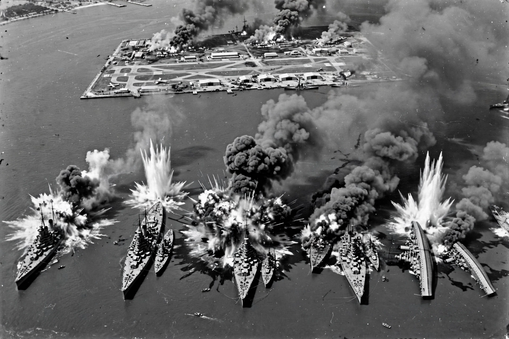

| Date | 7 December 1941 |
|---|---|
| Location | Pearl Harbor, Oahu, Hawaii, United States |
| Attacker | Imperial Japanese Navy (6 aircraft carriers, 353 aircraft) |
| US losses | 2,403 killed; 4 battleships sunk, others damaged; 188 aircraft destroyed |
| Japanese losses | 64 killed; 29 aircraft; 5 midget submarines |
| Result | United States declares war on Japan; Germany and Italy declare war on the US |
The attack on Pearl Harbor was a surprise military strike by the Imperial Japanese Navy Air Service on the United States naval base at Pearl Harbor, Hawaii, on the morning of 7 December 1941. The attack, codenamed Operation Z, was intended to cripple the US Pacific Fleet and deter American interference with Japan's planned seizure of resource-rich territories in Southeast Asia. Instead it galvanised American public opinion: the next day the United States declared war on Japan, and within days Germany and Italy declared war on the United States, bringing America fully into the Second World War on the side of the Allies.
Japan's war in China and its occupation of French Indochina had led the United States to impose an oil embargo and freeze Japanese assets in 1941. Concluding that war was inevitable, Admiral Isoroku Yamamoto planned a carrier strike on the Pacific Fleet at anchor. The task force under Vice-Admiral Chūichi Nagumo — six carriers with 353 aircraft — crossed the North Pacific in radio silence.
Two waves struck from 07:55 local time. Torpedo bombers, dive bombers and fighters hit the battleships moored along "Battleship Row" on Ford Island and airfields across Oahu. The battleship Arizona exploded and sank with 1,177 of her crew; Oklahoma capsized; in total four battleships were sunk and the other four damaged, alongside cruisers, destroyers and 188 destroyed aircraft. American casualties were 2,403 killed and 1,178 wounded. Crucially, the American aircraft carriers were at sea and escaped, and the base's fuel farms, repair yards and submarine facilities survived — oversights that blunted the attack's long-term effect.
President Franklin D. Roosevelt called 7 December "a date which will live in infamy" in his address to Congress, which declared war almost unanimously. Most of the damaged battleships were raised and returned to service. The attack remains the subject of historical debate, including unfounded advance-knowledge conspiracy theories, and is commemorated at the Pearl Harbor National Memorial, built around the sunken Arizona. Six months later the Pacific Fleet's carriers inflicted a decisive defeat on Japan at Midway.
This article is a recreation from memory for the muse-webcrawl project.